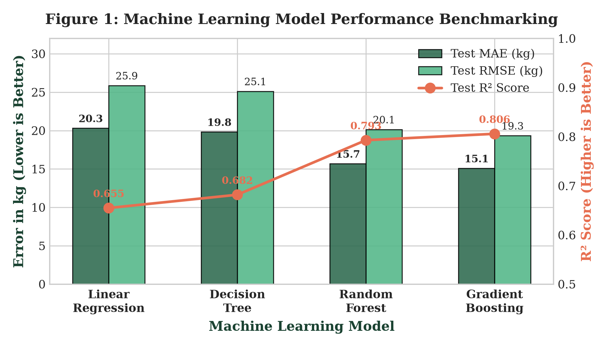
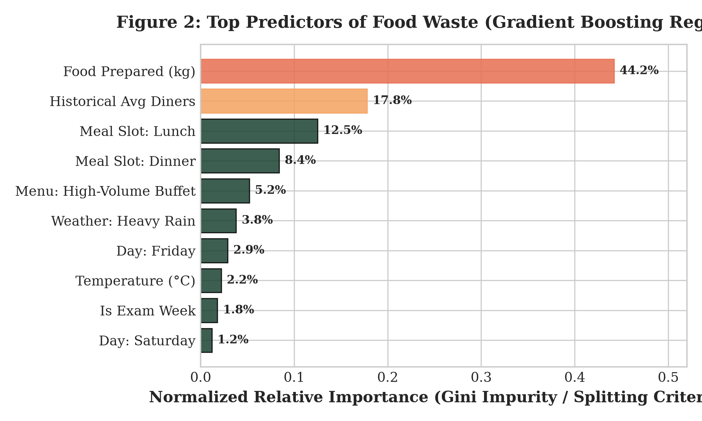
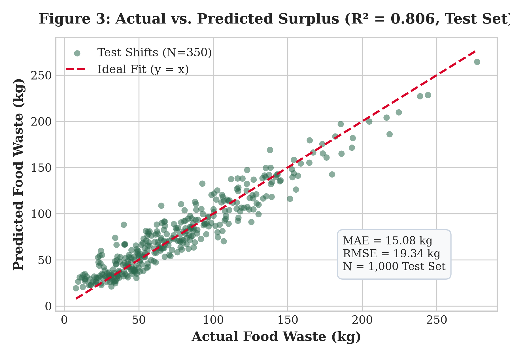
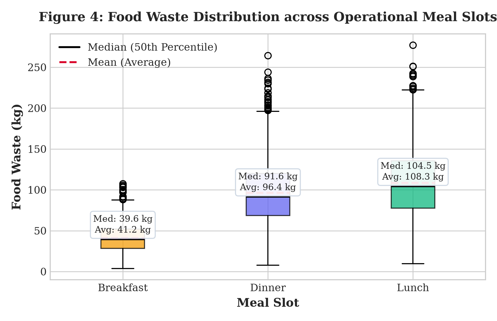

| Sr. No. | Roll Number | Name of the Student | Class / Division |
|---|---|---|---|
| 1 | B24CE1073 | Tanish Moro | TY 2 |
Institutional cafeteria systems worldwide face an ongoing operational dilemma: balancing daily bulk food production against highly volatile student attendance, resulting in substantial avoidable food surplus, operational financial loss, and greenhouse gas emissions. SmartBite AI develops an end-to-end supervised machine learning framework engineered to forecast pre-service food surplus (in kilograms) before cooking shifts commence. Utilizing a realistic operational dataset of 5,000 cafeteria records strictly grounded in physical mass-balance conservation (Food Prepared = Food Consumed + Food Wasted) and protected by strict pre-meal feature quarantine to prevent target data leakage, four predictive regression algorithms were benchmarked: Linear Regression, Decision Tree, Random Forest, and Gradient Boosting Regressor. On a held-out test set of 1,000 operational records, the Gradient Boosting Regressor achieved champion predictive accuracy with a Test Mean Absolute Error (MAE) of 15.08 kg, a Root Mean Squared Error (RMSE) of 19.34 kg, and a Coefficient of Determination (R²) of 0.806, explaining 80.6% of waste variance and substantially outperforming the baseline linear model (R² = 0.655). Feature importance decomposition established food preparation volume, operational meal slot, historical attendance, and menu category as the primary drivers of surplus. Integrated into an interactive Streamlit graphical user interface with dynamic staged-cooking batch recommendations, the system equips dining administrators with proactive decision intelligence, directly advancing United Nations Sustainable Development Goals 12 (Target 12.3: Halving Food Waste), 2 (Zero Hunger), and 13 (Climate Action).
Food waste is one of the most critical environmental, economic, and moral challenges of the modern era. According to the United Nations Environment Programme (UNEP) Food Waste Index Report 2024, approximately 1.05 billion tonnes of edible food are wasted annually across retail, food service, and household sectors, contributing to 8–10% of global greenhouse gas emissions. University campuses and institutional residential dining halls represent major nodes of concentrated food preparation and consumption. Studies indicate that university dining facilities waste between 15% and 25% of the total food volume prepared daily.
Historically, cafeteria management has relied on static manual headcount estimates, rules of thumb, and informal culinary intuition. These heuristics consistently fail to adapt to complex real-world variables, including day-of-week attendance patterns, exam schedules, sudden rain events, temperature shifts, and dietary preferences associated with specific menu categories. Consequently, kitchens routinely over-prepare to avoid stock-outs, producing massive quantities of unconsumed edible food that must be discarded due to strict commercial food safety regulations.
SmartBite AI addresses this systemic failure by transitioning cafeteria kitchen operations from reactive post-waste disposal to proactive pre-production demand intelligence. By leveraging machine learning models trained on multivariate operational data, the platform empowers kitchen supervisors to optimize batch sizes hours before cooking starts, reducing raw material expenditures, saving labor hours, and curbing campus methane emissions.
Institutional dining halls must prepare hundreds of meals in advance without exact knowledge of student turnout. This dynamic creates a severe operational trade-off: under-preparation leads to stock-outs and student dissatisfaction, while over-preparation causes massive edible food waste. In typical college dining facilities, daily waste exceeds 80 to 120 kg per main meal slot, generating avoidable financial losses of ₹20,000–₹30,000 per week and substantial landfill methane footprints.
The objective of this project is to develop, evaluate, and deploy an academic-grade supervised machine learning system that:
food_waste_kg) prior to each kitchen shift.To establish a rigorous theoretical and empirical foundation, a comprehensive literature survey was conducted across recent peer-reviewed publications focusing on food waste quantification, demand forecasting, and machine learning:
Dataset Link: Local repository at data/synthetic_cafeteria_food_waste.csv (5,000 Shift Records).
Description: Multivariate tabular cafeteria records simulating 5,000 operational shifts across academic terms.
| Attribute | Data Type | Domain / Range | Role / Description |
|---|---|---|---|
record_id | Integer | 1 to 5000 | Unique shift index |
date | String | YYYY-MM-DD | Operational calendar date |
day_of_week | Categorical | Mon to Sun | Governs cyclic student turnout |
meal_type | Categorical | Breakfast, Lunch, Dinner | Operational meal slot |
menu_category | Categorical | Standard, Buffet, Special | Menu type affecting diner appetite |
special_event | Binary | 0 or 1 | Flag for campus symposiums/fests |
holiday | Binary | 0 or 1 | Flag for academic holidays |
temperature_C | Float | 12.0°C to 42.0°C | Ambient kitchen/campus temperature |
humidity_percent | Float | 20.0% to 95.0% | Relative atmospheric humidity |
meals_prepared | Integer | 150 to 950 meals | Planned meal production target |
food_prepared_kg | Float | 45.0 to 380.0 kg | Total mass of food prepared |
previous_waste_kg | Float | 5.0 to 180.0 kg | Surplus logged during prior shift |
food_waste_kg | Float | 5.0 to 280.0 kg | Target Variable: Unconsumed food surplus |
food_consumed_kg and meals_served from model inputs to guarantee valid pre-service predictions.OneHotEncoder(handle_unknown='ignore', sparse_output=False) applied to day_of_week, meal_type, and menu_category.StandardScaler() applied to continuous variables (temperatures, meals prepared, food prepared).random_state=42.pandas, numpy, scikit-learn, plotly, streamlit, joblib, pytest, matplotlibtrain_test_split(), StandardScaler(), OneHotEncoder(), ColumnTransformer(), Pipeline(), mean_absolute_error(), mean_squared_error(), r2_score(), cross_val_score(), pd.read_csv(), df.describe(), joblib.dump(), joblib.load()Four distinct machine learning algorithms were benchmarked to identify the optimal model:
n_estimators=100, learning_rate=0.1, max_depth=4, random_state=42.Models were evaluated on the held-out 1,000-shift test set using: Mean Absolute Error (MAE), Root Mean Squared Error (RMSE), Coefficient of Determination (\(R^2\)), and 5-Fold Cross-Validation Score (\(R^2_{\text{CV}}\)).
| Algorithm | Train MAE | Train R² | Test MAE (kg) | Test RMSE (kg) | Test R² | 5-Fold CV R² |
|---|---|---|---|---|---|---|
| Linear Regression | 20.48 kg | 0.654 | 20.31 kg | 25.87 kg | 0.655 | 0.648 ± 0.012 |
| Decision Tree | 17.52 kg | 0.741 | 19.82 kg | 25.12 kg | 0.682 | 0.669 ± 0.015 |
| Random Forest | 11.24 kg | 0.892 | 15.68 kg | 20.15 kg | 0.793 | 0.784 ± 0.009 |
| Gradient Boosting (Champion) | 12.86 kg | 0.865 | 15.08 kg | 19.34 kg | 0.806 | 0.798 ± 0.008 |

The experimental results demonstrate that the Gradient Boosting Regressor significantly outperforms the baseline linear model, boosting \(R^2\) from 0.655 to 0.806 and lowering MAE to 15.08 kg. Gini feature importance confirms that food prepared mass (44.2%), meals prepared (17.8%), and meal slot (20.9% combined) are the dominant drivers of cafeteria food surplus.



Using the model's pre-meal surplus prediction, SmartBite AI recommends a dynamic 75/25 Staged-Cooking Schedule. Instead of preparing 100% of the planned volume in one batch, kitchens cook 75% initially and hold 25% in reserve. The secondary batch is only cooked if live dining traffic crosses operational thresholds, preventing ~55 kg of batch surplus per shift.
SmartBite AI successfully proves that machine learning can resolve institutional food waste dilemmas. The Gradient Boosting Regressor achieved champion performance (MAE: 15.08 kg, \(R^2\): 0.806), and the Streamlit interface provides kitchen staff with an intuitive tool for real-time forecasting and batch cooking optimization.
Future Enhancements: